O Biel AAC é um aplicativo de comunicação aumentativa e alternativa para pessoas com autismo, paralisia cerebral, apraxia e outras necessidades especiais de comunicação.
Disponível para Android · iOS em breve · Gratuito para experimentar
O Biel AAC foi desenvolvido para apoiar pessoas com diversas necessidades especiais de comunicação.
Recursos poderosos em uma interface simples e intuitiva.
Comece gratuitamente e faça upgrade quando precisar.
Use o Painel Web para criar e editar seções e cards diretamente pelo navegador. Mais fácil e rápido para terapeutas e pais que precisam configurar o app para seus pacientes e filhos.
⚙️ Acessar o Painel Web